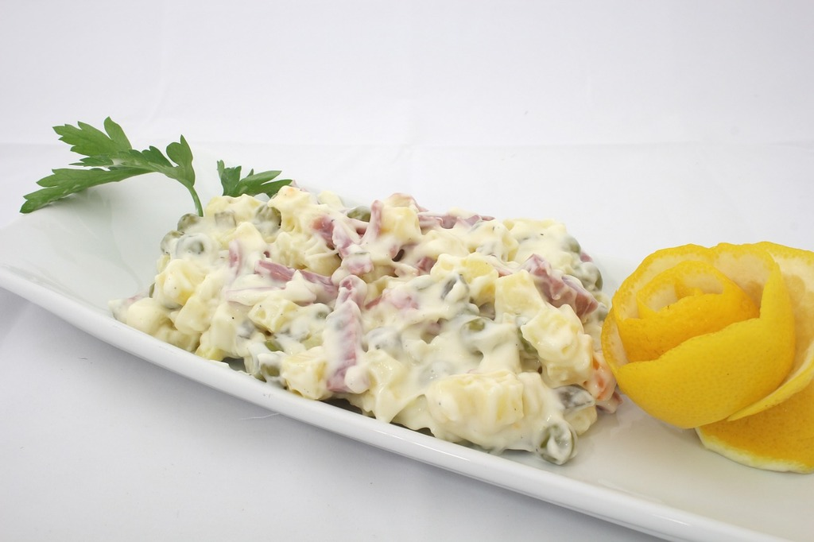

Potato Salad

Description
This is my mother's recipe for authentic German potato salad. Everyone, German or not, loves it. It is easy to double the recipe as well. I often bring it to potlucks, and we also have it at home on special occasions. There are usually no leftovers, but if there are, they don't last long!
Ingredients
- Potatoes
- Bacon
- Onion
- Vinegar
- Sugar
- Seasonings and herbs
Steps
- Boil, drain, and cool the diced and peeled potatoes. Fry the bacon in a skillet, then cook the onion in the bacon grease. Add the vinegar, sugar, water, salt, and pepper and bring to a boil.
- Add the potatoes and ½ of the bacon to the boiling liquid. When heated through, transfer the potatoes to a serving dish. Garnish with remaining bacon and parsley.
Home